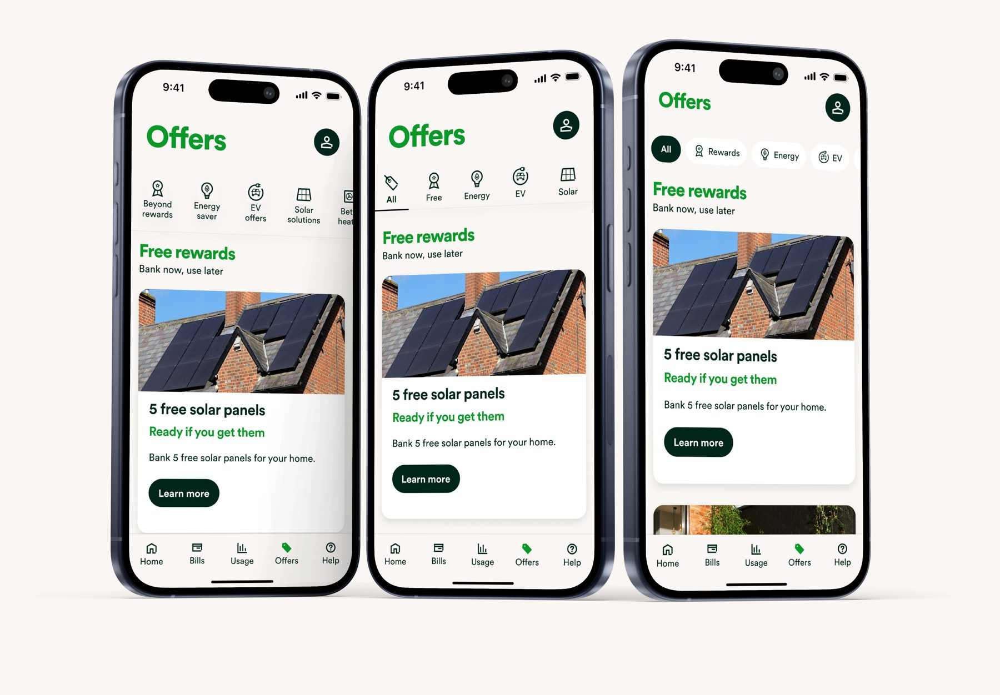
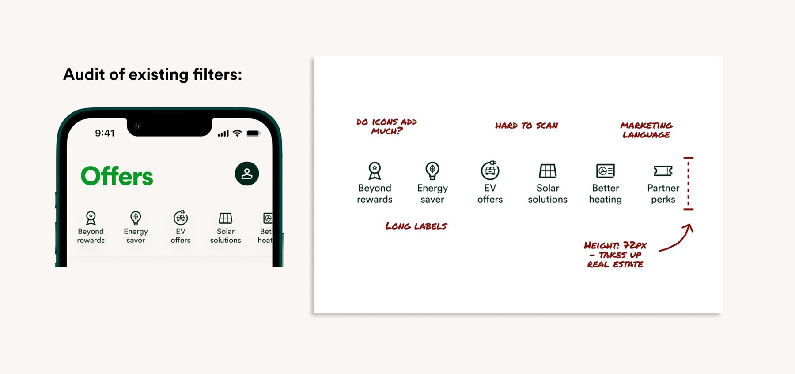
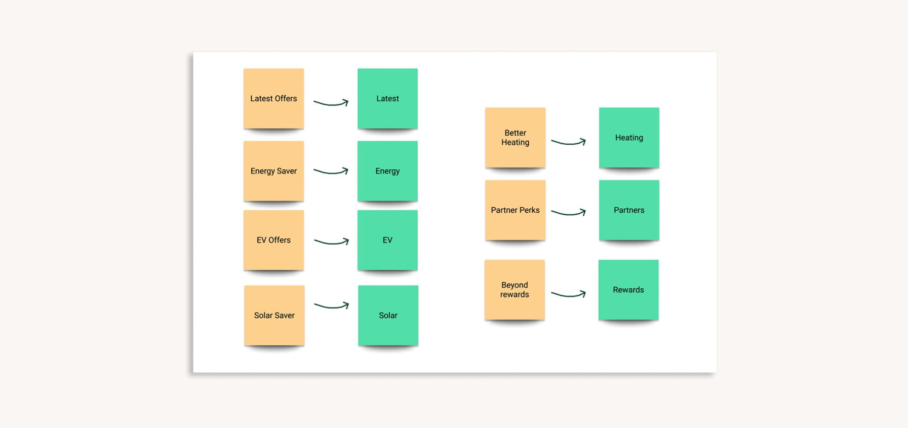
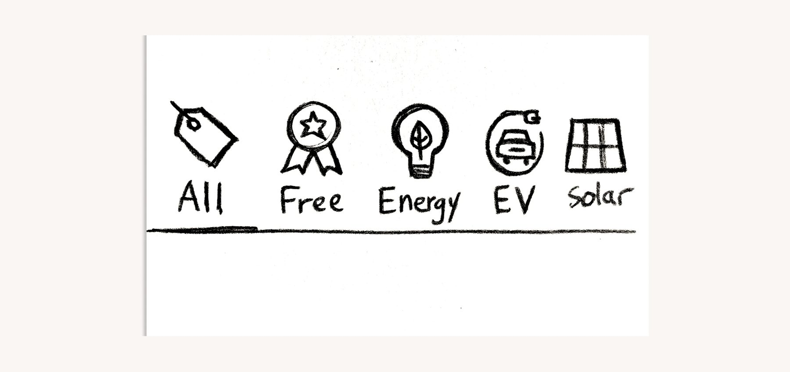
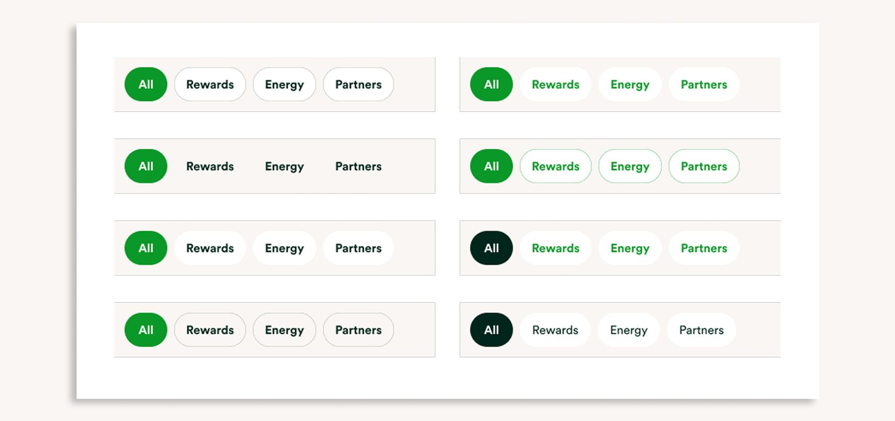
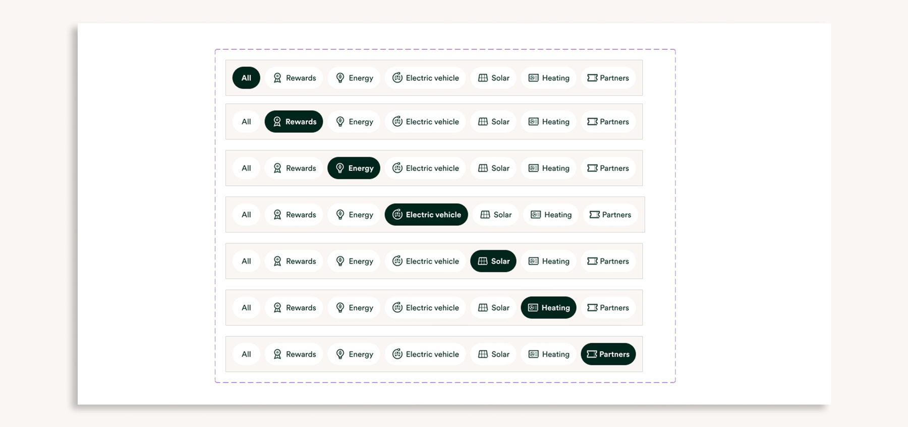
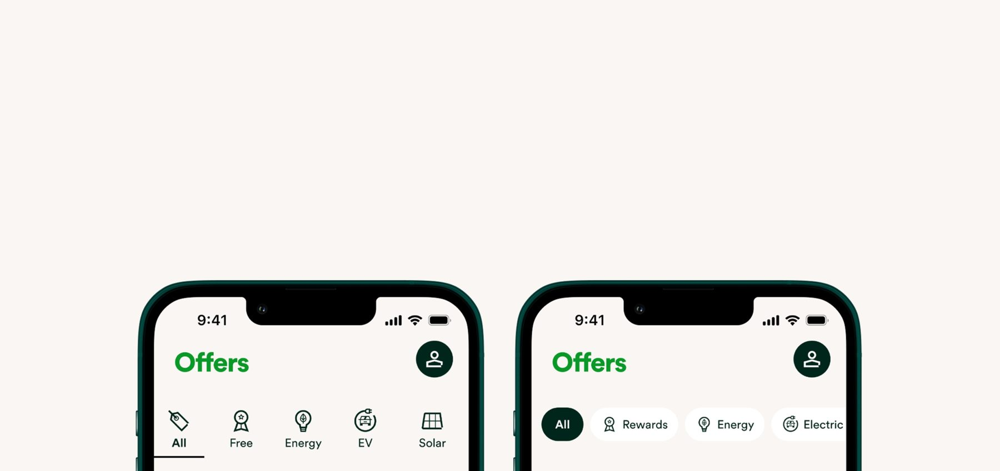
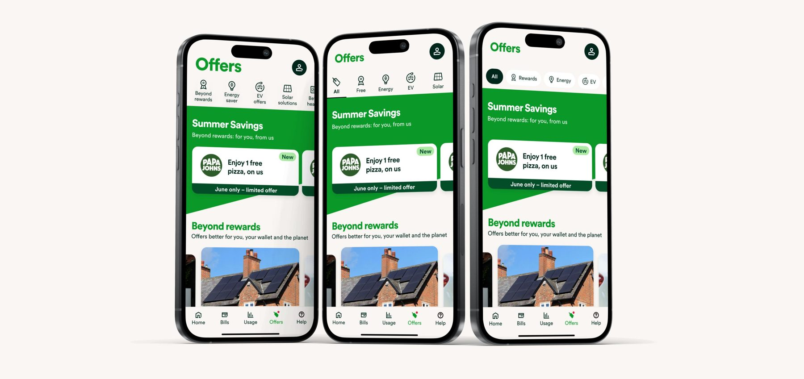
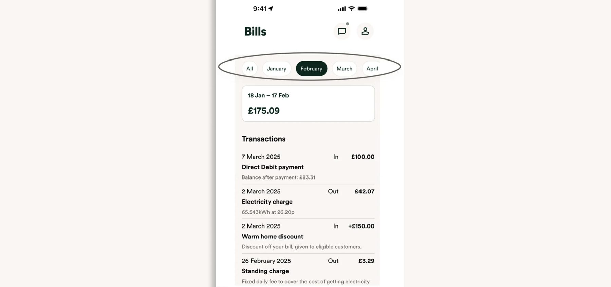

Case study
Redesigning filters
As OVO's offers and rewards grew, customers struggled to browse and find what suited them. I redesigned the filter component to make it simpler and more intuitive, starting with the words.
Overview
As OVO's offers and rewards grew, customers struggled to browse and find what suited them.
I redesigned the filter component to make it simpler and more intuitive, helping customers get more value from their rewards.
My goals were to:
- make filters more visible and intuitive
- reduce confusion and customer queries
- explore whether the pattern could be reused across the wider app
Understanding the problem
I reviewed how customers were using the filters and spotted a few common issues:
- there was no active state when landing on the Offers screen
- applied filters weren't visually clear
- labels were too long and often wrapped onto 2 lines
- the component was taller than it needed to be

Looking outwards
To sense-check our approach, I explored how apps like Spotify, Airbnb and Deliveroo handle filters. The best examples kept things simple: short labels, bold styles and no faff.
From this, I landed on 3 principles to guide the work:
- Keep labels short, ideally 1 word.
- Make active states clear.
- Add a reset option, like 'All', so customers can easily start again.
Rewriting the labels
I rewrote the filter labels to be shorter and more intuitive. Removing the marketing jargon made them much easier to scan.
I also created naming rules and guidance for future filters, so labels stay consistent and clear as more offers are added.

First iterations
I tried a few different layouts, including starting with an 'All' option so customers could see everything upfront and reset with one tap.

Refining the UI
I aligned the icons, cleaned up the spacing and used a highlighted pill to show the active state. The result was a more focused, less distracting design.



Usability testing
I ran an unmoderated test to compare the old and new designs. To get unbiased results, I excluded UX professionals and wrote clear, neutral questions, like:
- "What do you think this option will do?"
- "Can you tell which filters are applied?"
- "Is anything unclear or confusing?"
Impact
Participants described the new design as "simple", "clear" and "straightforward".
We launched the new filters as an A/B test to 25,000 Beyond customers, so we could measure the impact before a full launch. [DRAFT: add a result here if you have one, for example the change in filter use or offer clicks.]

Making it reusable
The new filter is built to last. Other teams can reuse the component without starting from scratch, which reduces design debt and keeps the app consistent.
